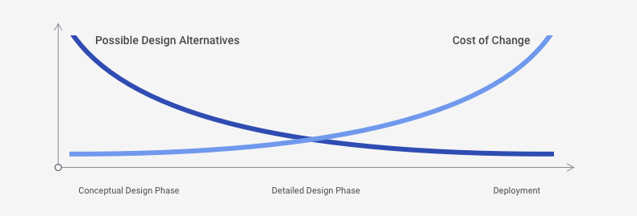

1.3 Benefits of UX
While a number of disciplines have long paved the way for User Experience – including cognitive psychology, library science and human-computer interaction (HCI) – the need for organizations to create and adopt this unique discipline arose at the outset of the internet era as society became increasingly dependent on user interfaces to facilitate daily tasks. The aim of this new discipline was to establish more reliable practices and methods to deliver user-centered software solutions, putting aside biases in the way project teams imagine user needs to create a more firm foundation of evidence upon which to base design decisions. The practices and methods offered by the User Experience discipline ultimately help create greater efficiency on the project team while promoting greater effectiveness and satisfaction among end users.
Studies consistently reinforce these benefits. A frequently cited report by IEEE states that:
Among the most common factors for project failure are:

User Experience is the key to addressing many of these factors. A well-defined User Experience process can help to establish and clarify project goals, balancing the needs of the people and organizations that stand to benefit most from digital products. The process also helps validate and refine system requirements by facilitating their analysis through the lens of user value, organizational value and complexity, identifying and resolving areas of ambiguity prior to the initiation of development cycles. These benefits leads to stronger project plans, better estimation and increased chances for project success.
The USAF is unique in its challenges and opportunities as they relate to incorporating User Experience practices and methods within its daily operations. The USAF became reliant on technology systems far in advance of the general public, and many of those early systems were deployed at a larger scale than comparable commercial systems. In addition, these software systems support highly mission-critical operations where effectiveness cannot be compromised. This makes the effort associated with updating legacy systems and modernizing practices much more challenging and sensitive than are typically found. However these factors also reinforce the need to make these changes, taking advantage of better technological capabilities and User Experience practices that yield greater effectiveness across the organization and its workforce, ensuring greater success and reliability for these mission-critical operations.
Why Software Fails - IEEE